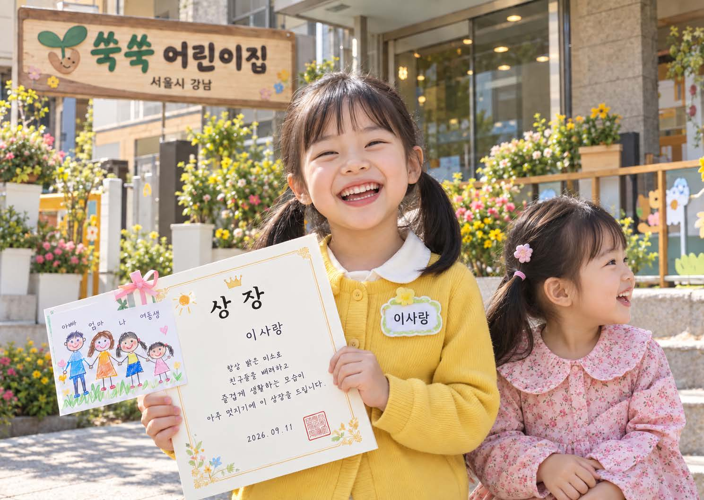
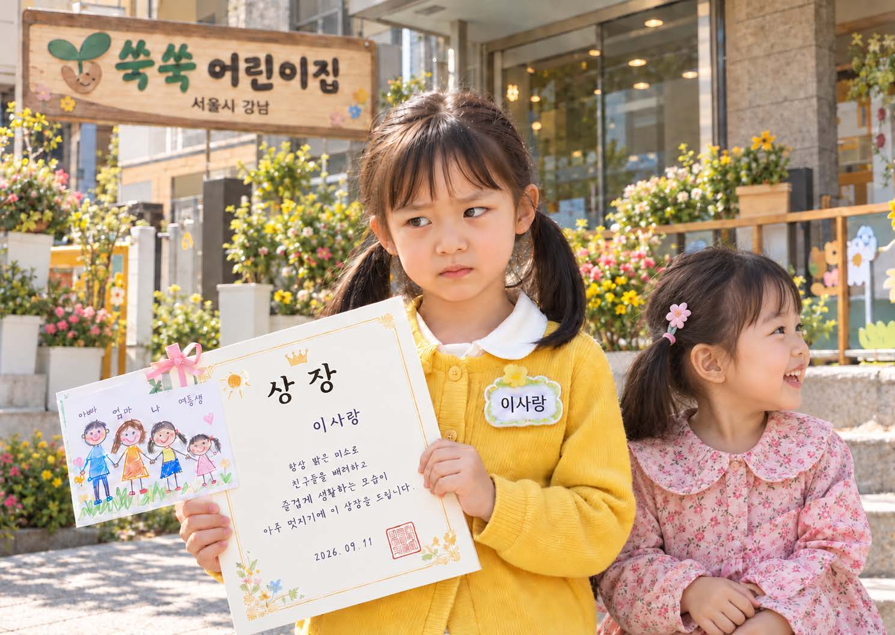
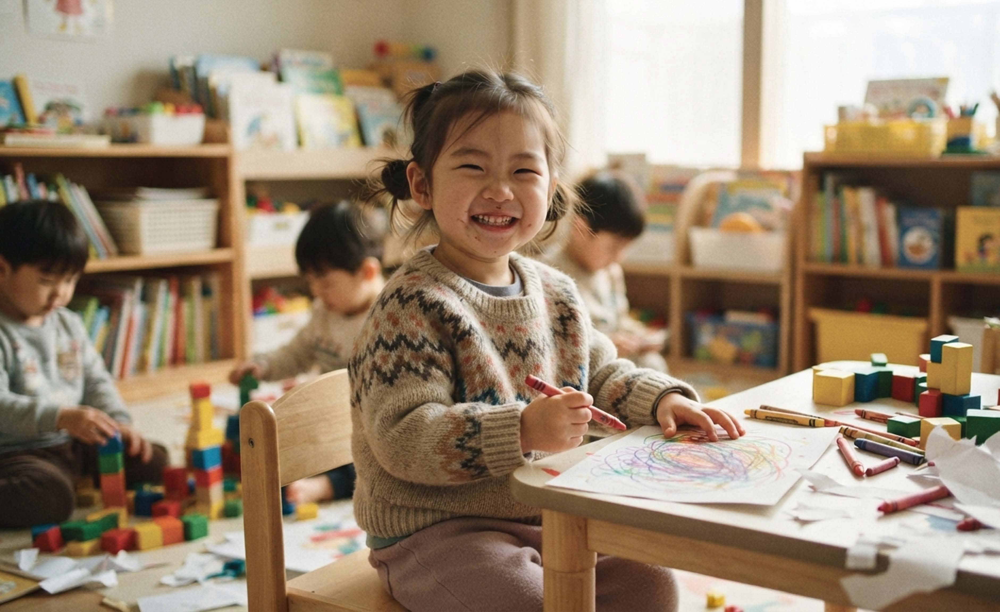
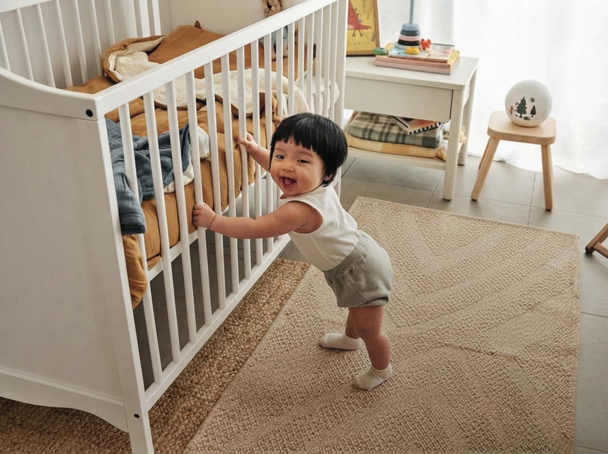
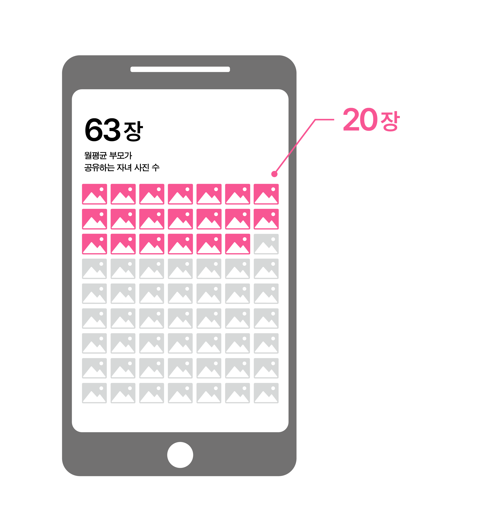

좋아요 128개
moms_daily 오늘도 즐거운 등원길 ✿

A NOTE ON SHARENTING
탐색하려면 아래로 스크롤하세요.

01 — 개인정보 노출
일상의 사진에서도 이름, 학교, 거주지 등 다양한 개인정보가 쉽게 유추될 수 있습니다.


좋아요 128개
moms_daily 오늘도 즐거운 등원길 ✿
한 장의 사진이 선택되었습니다.
월평균 부모가 공유하는 자녀 이미지 수 : 63장.
전문가가 경고한 딥페이크 제작에 충분할 수 있는 이미지 수 : 20장

아이콘을 눌러 아이 사진을 공유해보세요.
02 — 아이의 권리
성장하면서 자신의 생각을 이해하고 표현하고,
자신의 삶에 관한 결정에 참여하는 범위가 점차 넓어집니다.
영유아기
아동기
청소년기
성인기
아이의 실루엣에 마우스를 올려보세요.